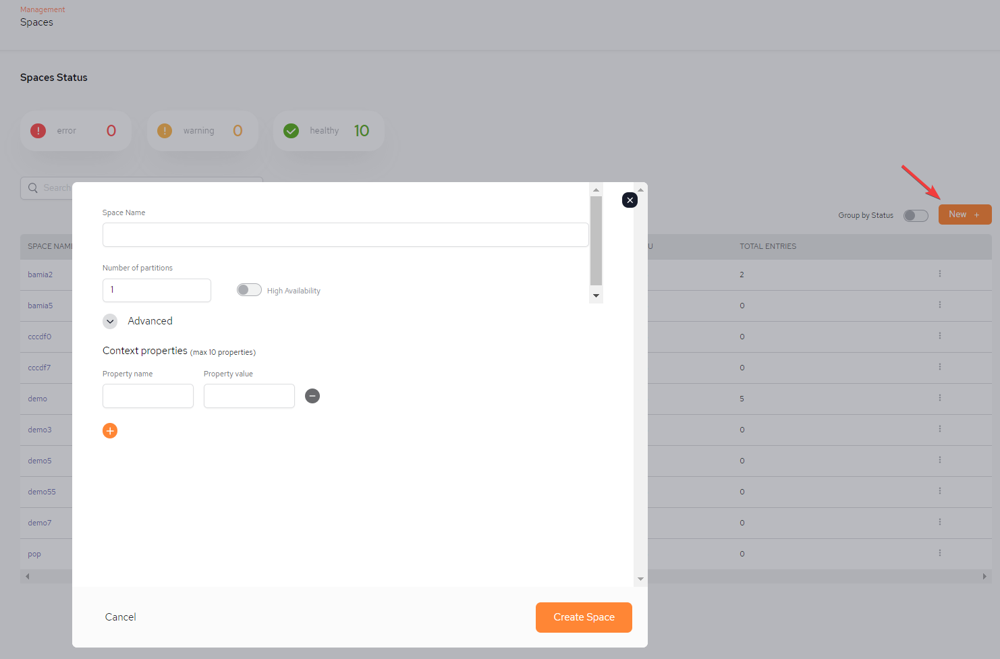
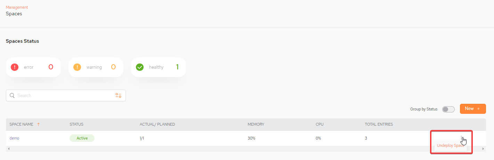

To add a new space, click New + and fill in the new space parameters, as shown below.

Space Name – select which GigaSpaces Space object the query should be executed against.
Number of partitions - number of partitions defined for the space.
High Availability – toggle to on if the space should be high availability (including the backup).
Advanced/Context properties/Property name – TBD
Advanced/Context properties/Property value - TBD
Create Space - click to create the Space.
A space can be undeployed by selecting the kebab menu (vertical three-dot menu) on the far right and selecting Undeploy Space:
.
For more information: